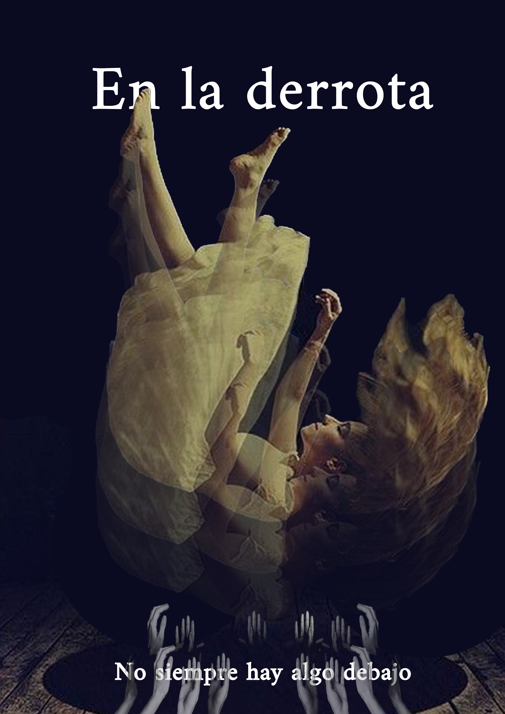
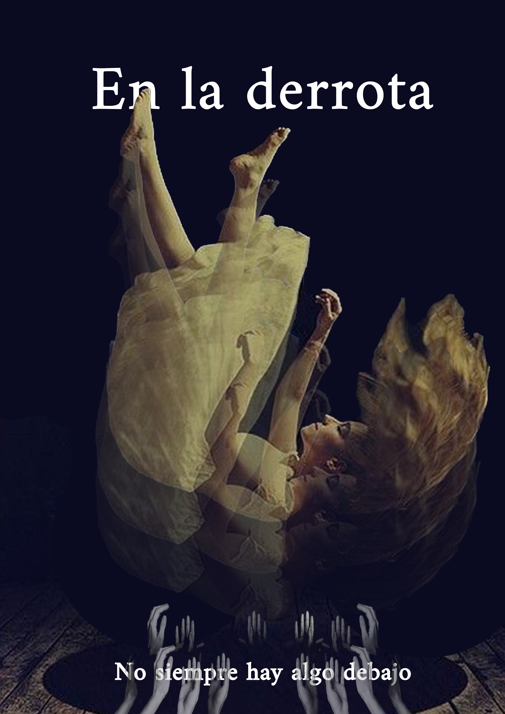

Diseñador Gráfico
Joaquin
Céspedes
Soy diseñador gráfico en constante crecimiento, apasionado por el poder del diseño para transformar marcas y comunicar ideas con propósito.
A través de mis proyectos busco no solo resolver necesidades visuales, sino también construir valor y significado en cada detalle.

 
